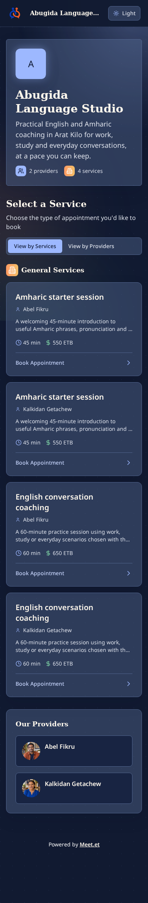

Website validation review
Real browser captures of the five templates. Click an image to inspect the full page. Automated behavior checks and exact cleanup results are recorded in the linked validation files. Visual baseline changes remain explicitly reported.
Public route validation · Owner workflow validation · Palette and font validation
Abugida Language Studio
 desktop · light · landing
desktop · light · landing
 mobile · dark · landing
desktop · light · book
mobile · dark · landing
desktop · light · book

mobile · dark · scheduler